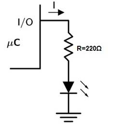

2015 |
|||||||||||
|
Autores: |
|||||||||||
|
João Pereira (Nº) 1111644 |
1111644@isep.ipp.pt |
||||||||||
|
Luís Forte (Nº) 1111270 |
1111270@isep.ipp.pt |
||||||||||
|
(Visualizar o video) |
|||||||||||
|
Cada vez mais as habitações são feitas não só com o objectivo de nos dar abrigo, mas também para nos proporcionar descanso e conforto. Para o comprovar observamos a crescente procura pela domótica nas novas habitações. Ora para satisfazer estes dois requisitos e como um dos temas à escolha era o programador semanal, vamos tentar apresentar uma proposta nesse sentido. Este projeto pareceu-nos aliciante, pois iremos por a prova os nossos conhecimentos de programação e eletrónica, bem como a nossa criatividade para desenvolver um produto atrativo com capacidade de ser comercializado. Para tal é preciso fazer um levantamento do hardware e software existente, que possibilite implementar um projeto interativo com o utilizador e robusto. No entanto é importante referir que este projecto poderia ter outras aplicações, nomeadamente na industria, para sistemas autónomos , onde a oferta de um produto barato e eficaz para aplicações de baixa complexidade seria uma opção viável, na medida em que o nosso produto estará limitado pelo numero de periféricos que a ele se possam conectar, certamente abriria possibilidade de negocio. Do ponto de vista académico este projecto pretende aprofundar conhecimentos na área de programação de microcontroladores, gestão e interligação dos seus periféricos, bem como todas as ligações cabladas, onde certamente vamos recorrer a dispositivos eletrónicos para satisfazer as nossas necessidades. Este relatorio foi dividido em capitulos: Arquitetura onde demonstramos como montamos cada circuito, Hardware onde damos a conhecer os componentes utilizados, Software onde falamos sobre o programa desenvolvidos, Resultados onde mencionamos o resultado obtido, Conclusão onde fazemos uma analise mais aprofundada do que atingimos neste trabalho e Referências onde damos a conhecer informação por nós recolhida.
Figura 1 Programador semanal |
|||||||||||
|
Como podemos ver no diagrama seguinte, recorremos a alguns periféricos para servir entrada e saida de dados ao nosso microcontrolador. O LCD e os LED´s simulam as nossas saidas, o teclado funciona como entrada e no caso particular do RTC tanto fnciona como entrada e como saida, pois para além de ele dar informação da hora para o microcontrolador, também temos a funcionalidade de escrever para o RTC, caso queira-mos acertar a hora
Figura
2 Diagrama de Blocos Na figura que se segue estão representadas todas as ligações do nosso protótipo.
Figura
3 Esquema de ligações Ligações entre atmega88 e LCD Este esquema pretende representar de uma forma mais atrativa como foram feitas as ligações entre o atmega88 e o LCD.
Figura
4 Esquema de ligações atmega88 com LCD Ligações entre atmega88 com real time clock Este esquema pretende representar de uma forma mais atrativa como foram feitas as ligações entre o atmega88 e o real time clock.
Figura
5 Esquema de ligações atmega88 com RTC Ligações entre atmega88 com teclado Este esquema pretende representar de uma forma mais atrativa como foram feitas as ligações entre o atmega88 e o teclado.
Figura
6 Esquema de ligações atmega88 com teclado Regulador de tensão Usamos o reguladorde tensão LM7805, onde a saída do circuito vai variar entre 4.8V a 5.2V. Com isto ao colocar uma pilha de 9V, vamos evitar uma sobrecarga nos equipamentos, pois estes devem ser alimentados a 5 V.
Figura
7 Circuito do regulador de tensão Circuito do led Colocamos um led em serie com uma resistencia de 220 Ω, para proteção do led. Para determinar o valor da resistencia, teve-se em conta a tensão mínima aplicada no led (0,7 V) e vendo a tabela do pdf da aula teórica 1 (electronica geral), identificamos a corrente máxima no led, como sendo de 20 mA e a tensão no ânodo é de 5V proveniente do atmega88.
Como na série E12 não existe uma resistencia de 215Ω usamos o valor acima mais proximo.  Figura
8 Circuito do led Circuito final em PCB Na figura 9 apresentamos a montagem feita em PCB. Devido a complexidade do circuito teriamos de recorrer a uma placa de dupla face pois teriamos pistas na parte superior e inferior da placa. Para distinguir, as pistas a azul estariam numa face e as pistas a vermelho em outra face.
Figura
9 Circuito final em PCB | |||||||||||
|
Para elaborar o nosso projecto recorremos aos seguintes periféricos: · Microcontrolador Atmega88 · 1 LCD 16X2 · 1 Teclado 4x4 · 1 Real Time Clock DS1307 · 1 Regulado de tensão LM7805 · 1 Potênciometro de 10 KΩ · 1 Oscilador 32,7 MHz · 1 Condensador 0.33µF · 1 Condensador 0.1µF · 2 Breadboard · 5 Resistencia de 220Ω · 5 Led · 1 Pilha de 9V Microcontrolador Atmega88: Este microcontrolador possui 28 pinos de ligação distribuídos por 3 portos, tem ainda um relógio interno de 8MHz, mas como é dividido por 8 devido ao CKDIV8 (Fuse), o microcontrolador tem realmente um relógio interno de 1MHz, sendo para nós mais que suficiente. Optamos por este microcontrolador, pois já nos encontramos familiarizados com ele. Figura
10 Atmega88 LCD 16X2: O LCD escolhido foi um 16x2, com 16 pinos de ligação. Optamos por este seguindo um critério de poupança de ligações para com o microcontrolador e por considerar-mos suficiente para imprimir as mensagens pretendidas. Para a programação deste componente foi utilizada a biblioteca[1] (lcd.h), esta biblioteca é compativel com o modo de 4 bits de dados usado.
Figura
11 LCD 16X2 Teclado 4X4: Optamos por um teclado 4x4, uma vez que permite ao utilizador definir hora, dia e atuar os modos de funcionamento. Como é visível na figura, este tem 8 pinos de ligação, sendo os quatro primeiros para colunas e os restantes para linhas. Ainda de referir que o teclado funciona como dispositivo de entrada e saída, as linhas são definidas como entrada e as colunas como saída.
Figura
13 Teclado 4X4 Real Time Clock: A comunicação do RTC com o atmega é feita através do protocolo I2C. Este é um protocolo serial-dados que utiliza duas linhas de dados para comunicação, uma linha de dados (SDA) e um relógio (SCL). Os dispositivos no barramento I2C podem ser masters ou slaves. Os masters iniciam as transferências de dados, e os slaves reagem apenas aos pedidos do master. Para a programação deste componente foram usadas duas bibliotecas [2], uma responsável pela comunicação do RTC com o atmega88 (twi.h) e outra responsável pelas funções de ler e escrever no RTC (ds1307.h)
Figura
12 Real Time Clock Regulador de tensão LM7805: Para evitar que os periféricos e microcontrolador sofram de sobretensão, o regulador converte a tensão de entrada, nos 5 V necessários ao correcto funcionamento dos aparelhos.
Figura
15 Regulador de tensão LM7805 Potênciometro 10 KΩ: Potenciómetro de 10 KΩ, onde a sua função é variar o contraste do LCD a medida que se varia o potênciometro.
Figura
14 Potênciometro KΩ Oscilador 32.7 MHz: Um oscilador tem a função de fornecer impulsos com uma dada frequência constante ao longo do tempo ao RTC. Quanto maior a frequência do oscilador, mais preciso ele é mas também mais energia gasta.
Figura
16 Oscilador 32.7 MHz Breadboard: Este foi o meio utilizado como base de suporte ao nosso circuito, tem uma grande vantagem em relação ao circuito PCB, pois permite a constante alteração do circuito sempre que seja necessário.
Figura
18 Breadboard LED: Utilizamos Led para simular as nossas saidas, desta forma pretendemos que cada led simule um motor que são atuados mediante o programa.
Figura
16 LED Pilha 9 V: Para dar robustez ao nosso trabalho, esta pilha de 9 V permite que o programa funcione sem recorrer à alimentação do computador ou fontes de tensão.
Figura
17 Pilha 9 V |
|||||||||||
|
Para poder interagir de forma eficaz com todos os periféricos, temos de proceder a diversas configurações e uma construção lógica robusta. Cálculos Um dos requesitos deste trabalho era manter a funcionar o led intermitente implementado no trabalho anterior. Para tal consideramos:
Uma vez que fclock = 1MHz, prescaler 64(obtido pela calculo seguinte), atraso 10ms e o atraso pretendido era de 500ms. Conseguiu-se isto ao decrementar um contador 50 vezes, em que cada decremento levaria 10 ms. Obtivemos um OCR0A de 155.
Registos Registos utilizados para configuração do hardware: DDRB: ·
Bit 0: É onde se encontra o led que acende e apaga num intervalo de 500ms, é portanto uma saída e por isso tem o valor 1. ·
Bits
1 a 7: estão definidos como saídas, com valor 1, uma vez que estes pinos são utilizados por um LCD. DDRC: ·
Bits 0 a 3: Estes bits estão definidos com o valor 1, saídas onde estão ligados leds que representam saídas. ·
Bits 4 e 5: SDA e SCL, estão definidos como entradas, com valor 0. É onde se encontra conectado o real time clock (RTC). ·
Os
restantes bits não estão a ser utilizados. DDRD: ·
Bits 0 a 3: Estes bits estão definidos como entradas, com valor 0, representando as linhas do teclado matricial. ·
Bits 4 a 7: Inicializados como saídas, com valor 1, representando as colunas do teclado matricial. Registos
do timer 0 usados para gerar um atraso de 500 ms: TCCR0A: ·
COM0A1:0
e COM0B1:0: Encontram-se a 0 porque o OC0A e OC0B estão desligados.
·
WGM01
e WGM00: Estes bits têm os
valores 1 e 0 respetivamente porque o modo de operação escolhido do timer 0
foi o modo CTC. TCCR0B: ·
FOC2A e FOC2B: Estes 2 bits estão a 0 porque,
embora estes bits sejam usados para modos não pwm, para o pretendido não são
usados.
TIMSK0: ·
Bits
de 7 a 3: Bits reservados do atmega88 que têm sempre o valor 0. ·
De modo a ativar a interrupção A do TC0 colocou-se o registo OCIE0A a 0, OCIE0B a 0 e TOEI0 a 1. Fluxogramas Os fluxogramas que se vão apresentar de seguida correnpondem as funções implementadas na elaboração do nosso código. Inicio() A função Inicio corresponde à main do nosso programa, este fluxograma representa de que forma é efetuada a interação lógica dos nossos periféricos de acordo com o pretendido.
Figura
16 Fluxograma Inicio ISR_TIMER 0 () Esta é a interrupção responsavel pelo atraso de 10 ms, onde após decrementar 50 vezes o contador, vai atualizar a flag que representa o atraso.
Figura
16 Fluxograma ISR_TIMER 0 Acerta Hora() Esta função é responsavel por acertar a hora para o real time clock, apresentando no lcd os valores inseridos.
Figura
16 Fluxograma Acerta hora Acerta Dia() Esta função é responsavel por acertar o dia para o real time clock, apresentando no lcd os valores inseridos.
Figura
16 Fluxograma Acerta dia Acerta auto() Esta função é particularmente importante no nosso projeto, pois permite alterar as datas de inicio e fim das funções, dando assim uma maior robustez ao nosso trabalho, permitindo ao utilizador um maior controlo.
Figura
16 Fluxograma Acerta automático Rega_A() Esta função é responsavel pela ativação do modo rega automático, onde é activada e desactivada dependendo da hora defenida pelo utilizador, mais a condição de só funcionar ás segundas, quartas e sextas feiras.
Figura
16 Fluxograma Rega automática Segurança_A() Esta função é responsavel pela ativação do modo Segurança automático, onde é activada e desactivada dependendo da hora defenida pelo utilizador.
Figura
16 Fluxograma Segurança_A Rega_M() Esta função é responsavel pela ativação do modo rega manual, onde é activada e desactivada manualmente sem qualquer restrição.
Figura
16 Fluxograma Rega manual Segurança_M() Esta função é responsavel pela ativação do modo segurança manual, onde é activada e desactivada manualmente sem qualquer restrição.
Figura
16 Fluxograma Segurança manual Teclado() Esta função é responsavel por ler o teclado, retornar as teclas pressionadas e chamar as respetivas funções. Quando nenhuma tecla é pressionada, a função teclado retorna o valor zero, por sua vez, quando se pressiona a tecla zero esta função retorna valor doze.
Figura
16 Fluxograma Teclado Programa O programa, devidamente
comentado, pode ser visualizado fazendo o download do ficheiro em pdf no seguinte link: Programa |
|||||||||||
|
Os objectivos foram atingidos, na medida em que conseguimos com que o nosso projecto controle diversas saídas periodicamente de forma automática e manual. Em vez de criar várias funções e ocupar varias saídas para elas, optamos por controlar o lcd e mais quatro led recorrendo a duas funções. Contudo estas funções podem funcionar em modo manual, sendo activadas pelas respectivas teclas do teclado e este modo prevalece em relação ao modo automático, onde as funções são chamadas dependendo da hora e dia da semana. Preocupamo-nos ainda em alterar a hora de inicio e fim de funcionamento de uma das funções, acertar a hora do real time clock e acertar o dia da semana. Na fase final do projecto inicia-mos o estudo da aplicação de um modulo Bluetooth para conectar com um smartfhone, contudo devido a falta de pinos disponíveis e devido ao pouco tempo restante para trocar por um microcontrolador maior, apenas desenvolvemos algum código nesse sentido. Os resultados podem ser vistos num vídeo no início da página. |
|||||||||||
|
Ao longo deste trabalho deparamo-nos com diversos problemas para atingir o nosso objectivo. Numa fase inicial após definir que periféricos usar, fizemos um levantamento do pin out de cada um e decidimos onde os iriamos conectar, no entanto ao longo do trabalho as ligações sofreram alterações, quer para redimensionar o circuito ou para desocupar portas que faziam falta especificamente para outros periféricos. Depois preocupamo-nos em perceber como estabelecer a comunicação entre eles. Cada periférico tem as suas próprias bibliotecas e foi ai o nosso maior problema. No caso do LCD optamos por usar uma biblioteca compatível com lcd a funcionar com 4 ligações de dados, para poupar ligações que mais tarde iriam fazer falta para representar as nossas saídas. No Real Time Clock, apesar de não termos nenhuma restrição, não foi fácil encontrar uma biblioteca compatível com o microcontrolador. Este problema foi resolvido apos várias tentativas, até encontrar as bibliotecas certas. Tal problema não se verificou no teclado, pois neste caso optamos por criar o nosso próprio codigo. Ultrapassada esta fase passa-mos para a implementação da nossa lógica, onde optamos por fazer uma interligação entre um programa autónomo semanal (tema do projecto) e funções controladas pelo utilizador. Durante esta fase apesar de alguns contratempos, nomeadamente desenvolver o código que permite ler e alterar a hora lida pelo real time clock, atingimos o pretendido sem grandes problemas. Como no trabalho anterior já tinha-mos sido avaliados com sucesso na simulação de sensores PWM e como estava-mos limitados a nível de portas, optamos por prescindir deste tipo de sensores e implementar algo novo para nós como teclado e real time clock, contudo na fase final do projecto decidimos implementar uma nova melhoria, também esta novidade para nós, que é uma aplicação para telemóvel com capacidade de controlar as funções do programa em paralelo com o teclado. Este desafio exigiu alguma pesquisa e ajuda, mas conseguimos atingir o pretendido. Perante isto tudo, conclui-mos que foi uma experiência bem sucedida este projecto, tal não teria acontecido se não fosse os conhecimentos de programação anteriormente e adquiridos, contudo, este projecto permitiu-nos obter novos conhecimentos e experiência em trabalhar com novas aplicações e tecnologias, competência esta cada vez mais importante para um engenheiro. |
|||||||||||
|
[1] extremeelectronics, http://extremeelectronics.co.in/avr-tutorials/using-lcd-module-with-avrs/ [2] ABLAB, http://www.ablab.in/ds1307-rtc-based-digital-clock-designing-in-24-hour-format-with-avr-atmega32-microcontroller-and-lcd-display/ [3] RTC datasheet, http://datasheets.maximintegrated.com/en/ds/DS1307.pdf [4] Atmega88 datasheet, http://www.atmel.com/images/doc2545.pdf [5] Teclado , http://blog.filipeflop.com/arduino/teclado-matricial-4x4-arduino.html | |||||||||||